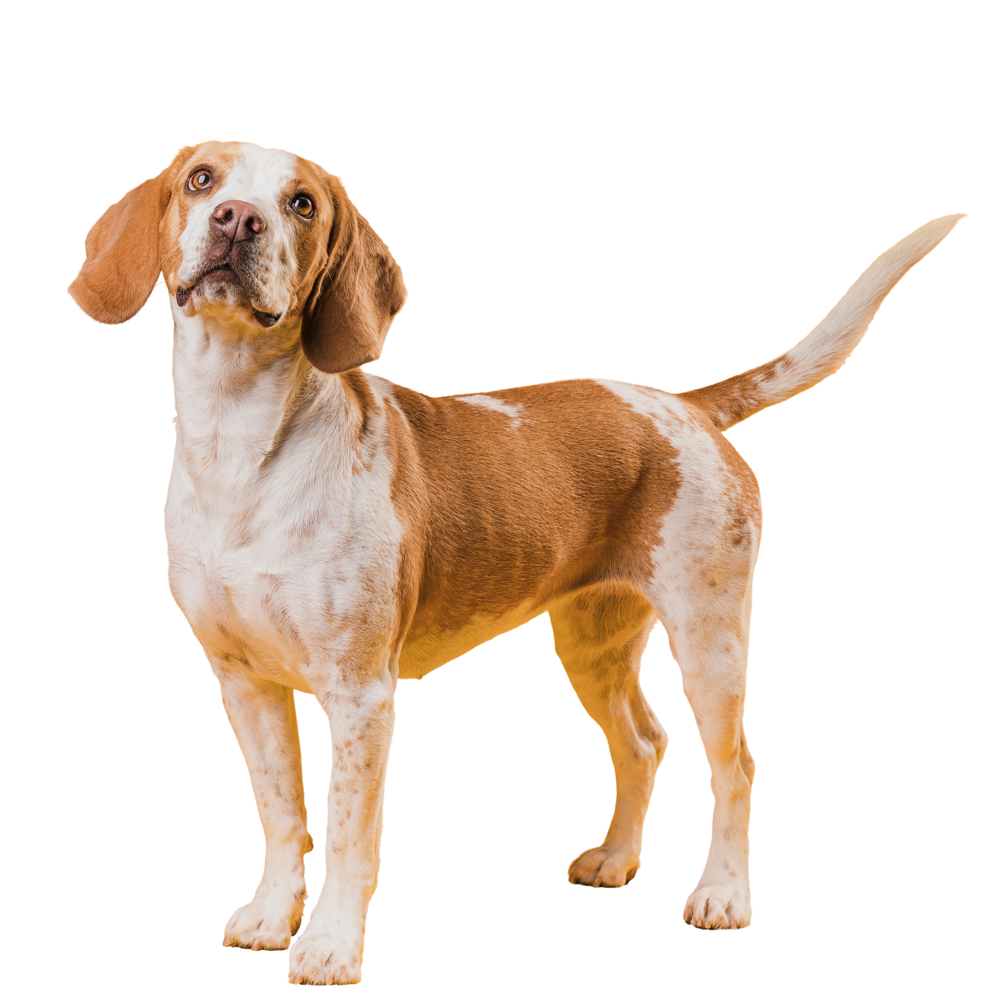
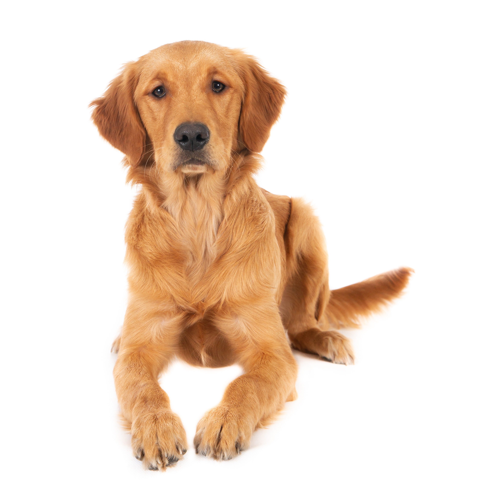

Con el apadrinamiento ayudaras al refugio a seguir adelante, además podrás saber y estar al tanto de todo lo que pasa con el peludo que has escogido, operaciones, salidas, estado de adopción y etc.
¿Padrino o Madrina?
Conócelos y Colabora

MORA
Es una de los cachorras que llego sumamente enferma pero que poco a poco se ha ido recuperando hasta convertirse en la maravillosa perrita de las fotos, es probablemente la más revoltosa pero también es la más cariñosa de todos y espera encontrar su primer hogar.

DUQUE
Se ha encontrado a Duque en un pequeño pueblo de Albacete, pero aunque necesita un hogar puede ofrecer mucho amor a su familia adoptiva.

TOBIAS
Fue encontrado en medio de una carretera lleno de parásitos y con muchísimo miedo, después de mucho trabajo por parte de los chicos que lo encontraron lograron cogerlo y lo trajeron con nosotros, donde espera su nuevo hogar